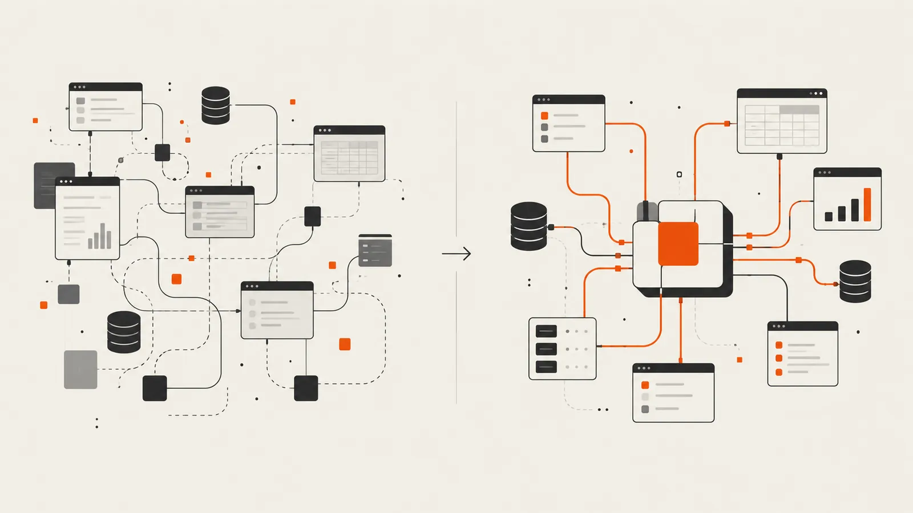
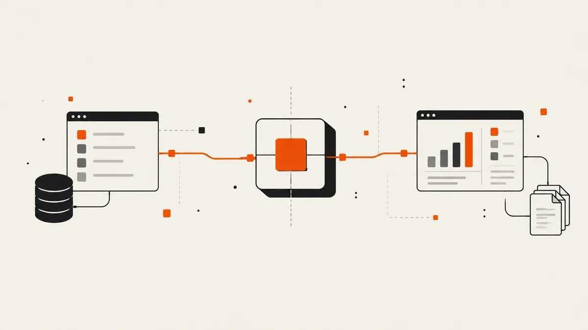
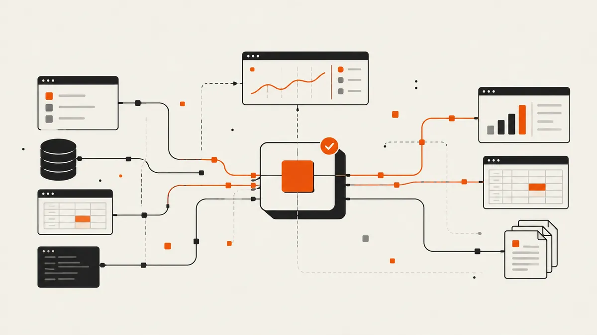

Diagnóstico
Mapeamos como o dado anda hoje entre seus sistemas e onde ele é digitado de novo.
- Conversa de 30 minutos com quem faz o trabalho
- Levantamento dos sistemas e de como cada um exporta dados
- Mapa do fluxo com os pontos de retrabalho marcados
A Tramia conecta os sistemas que sua empresa já usa e acaba com a redigitação entre eles. Sem trocar de ERP e sem a equipe reaprender nada.

É trabalho que ninguém contratou e que não aparece em relatório. Ele só aparece como atraso, erro de digitação e gente sobrecarregada.
Entra no sistema de vendas e depois é lançado de novo no financeiro ou no estoque.
Os dados certos estão num arquivo que só uma pessoa sabe atualizar.
Alguém exporta de três lugares, junta, confere e manda por e-mail.
Pedidos e aprovações chegam por mensagem e precisam ser passados para o sistema.
Estimativa com 22 dias úteis por mês. Ajuste para a realidade da sua empresa.
Você só decide seguir depois de ver o mapa do problema e o tamanho do ganho.
Mapeamos como o dado anda hoje entre seus sistemas e onde ele é digitado de novo.
Ligamos os sistemas para que o dado entre uma vez e chegue sozinho aonde precisa.

Acompanhamos o fluxo integrado e ajustamos quando algum sistema muda.

Por onde o dado passa hoje, sistema a sistema.
Cada etapa em que alguém digita ou confere de novo.
Estimativa de horas por mês que a integração devolve.
O que integrar primeiro, quanto custa e em quanto tempo.
| Critério | Trocar de ERP | Seguir na planilha | Integrar com a Tramia |
|---|---|---|---|
| Investimento inicial | Alto: licença, migração e implantação | Nenhum | Proporcional aos fluxos integrados |
| Equipe reaprende | Sim, todos os processos | Não | Não, os sistemas continuam os mesmos |
| Redigitação | Some, se tudo migrar | Continua | Some nos fluxos integrados |
| Principal risco | Migração de dados e parada da operação | Erro manual e dependência de uma pessoa | Mudança em sistema de terceiro, coberta na manutenção |
O diagnóstico é gratuito. A integração é orçada por fluxo depois do diagnóstico, com escopo e preço fechados por escrito. A manutenção é uma mensalidade combinada no mesmo contrato.
Não. A ideia é justamente manter o que sua equipe já usa e fazer esses sistemas trocarem dados entre si.
ERPs, planilhas do Excel e do Google, plataformas de e-commerce, e-mail, formulários e sistemas que tenham API, acesso a banco de dados ou exportação de arquivos. O diagnóstico confirma o que é viável no seu caso.
Mudanças em sistemas de terceiros acontecem. O contrato de manutenção cobre o ajuste da integração quando isso ocorre, sem custo extra.
Usamos só os acessos necessários para cada integração, com credenciais em nome da sua empresa, e assinamos termo de confidencialidade. O tratamento segue a LGPD.
Leva menos de dois minutos.
Pelo WhatsApp ou por vídeo, no horário que for melhor.
Com os pontos de retrabalho e uma proposta, sem compromisso.
Se preferir adiantar, mande uma mensagem para (42) 98422-1831.
A mensagem abre já preenchida com o que você digitou.
Abrir WhatsApp